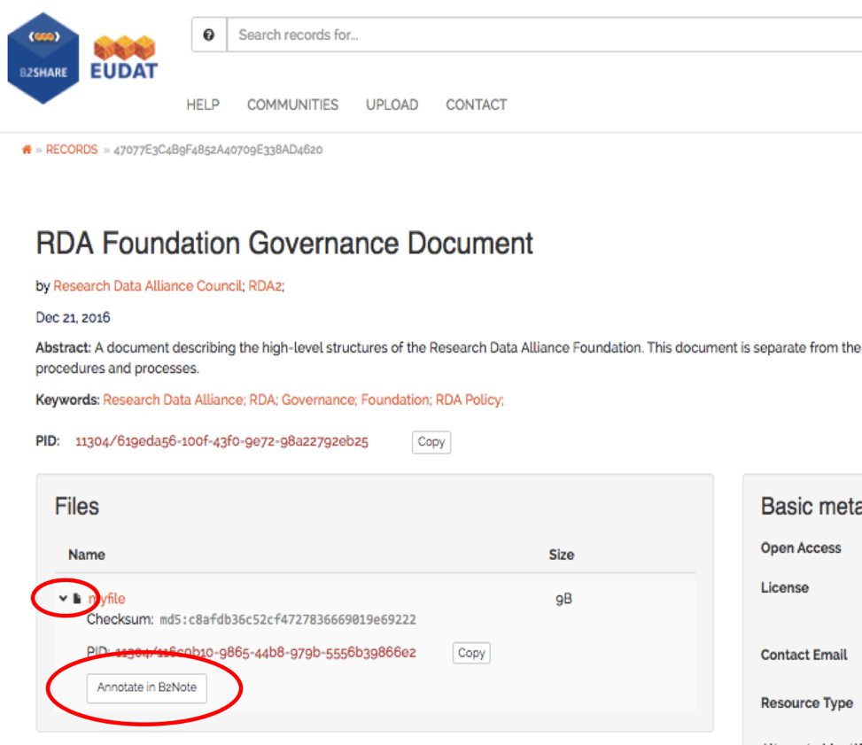

B2NOTE
The EUDAT and EOSC Hub annotation service
Use annotations to structure your data
An annotation is a keyword or commentary attached to a file, that explains or classifies it. With B2Note, you can easily create and manage your annotations. There exist 3 types of annotations in B2Note:
- The semantic tag, a keyword from an ontology;
- The free-text keyword, a keyword chosen by the user. If possible, use semantic tags over free-text keywords.
- The comment, a longer annotation
B2Note is currently integrated in B2Share: access files with B2Share, then annotate them with B2Note.
How to use it
Here is how to access the B2NOTE console from a B2SHARE file record page.
Step 1: Pick a file in B2SHARE.
Step 2: Click on the arrow next to the file you want to annotate to reveal the annotation button.

Step 3: Click on the button to show the widget. The widget should appear at the right of the browser window.
Feedback
We'd like to invite you to participate in a short survey to help us improve the B2Note service with your feedback.
Sandbox
Annotations are ony valuable if they make sense. If you want to make random annotations for trying B2Note, please use the sandbox.